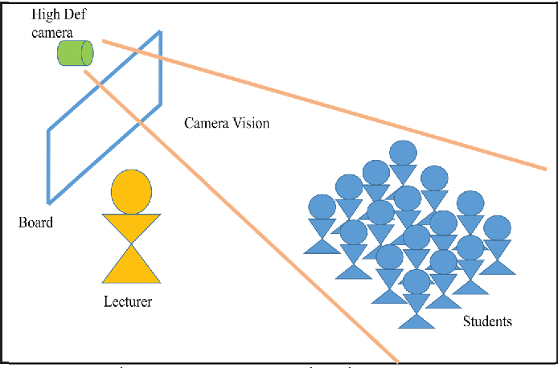
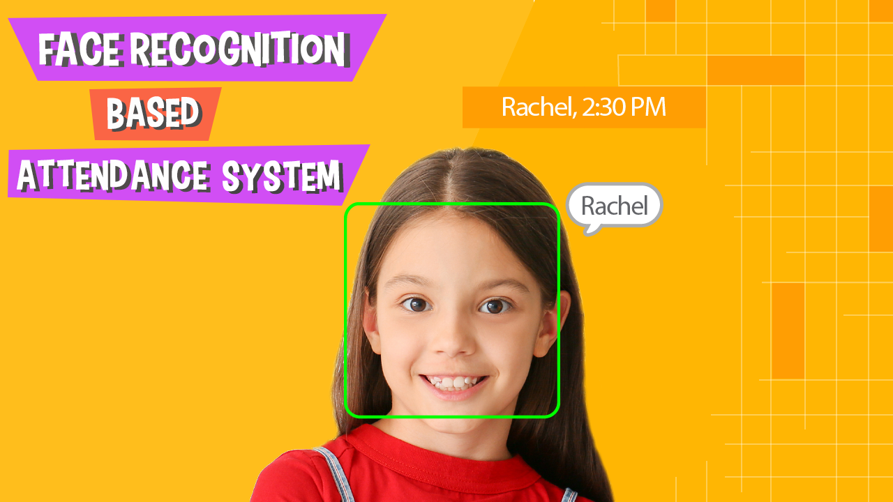

Attendance System
This is project is for our class.This is a complete Attendance system with which give us the Excel File who are present in the class.
This system is completely based on Open CV which is python library for the Face Detection. We have used a tensorflow also in this.
In this system we have to feed image to the system and then it will detect faces from that image and then it will detect the faces and provide us a output in the Excel File.
we have worked on this system for 3 months to complete it.
Technologies:
- - Python
- - Django
- - Open CV
- - Tensorflow
- - Techable Machine (For Training our model)
Laboratory Admin Dashboard
